dΦ =
dΦ = 
 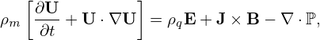2πqdψ = 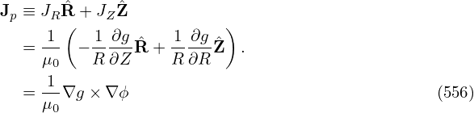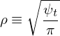qdψ
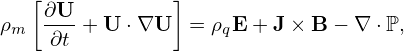2πqdψ = 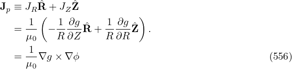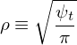qdψ
We know that the toroidal flux ψt, safety factor q, and the Ψ in the GS equation are related by the following equations:
|
| (553) |
|
| (554) |
Define:
|
| (555) |
(In the Toray_ga code, the radial coordinate ρ is defined as
|
| (556) |
where Bt0 is a constant factor.ρ defined this way is of length dimension, which is an effective geometry radius obtained by approximating the flux surface as circular.)
I use Eq. (555) to define ρ. Then we have
|
| (557) |
|
| (558) |
|
| (559) |
|
| (560) |
|
| (561) |
Eq. (561) is used to transform between ψ and ρ.
|
dρ = 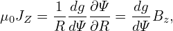dΦ = 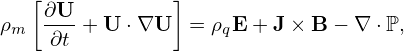2πqdψ = 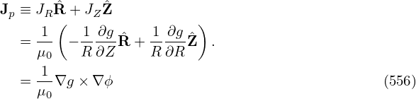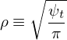qdψ
|
| ⇒ dψ = 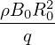dρ |
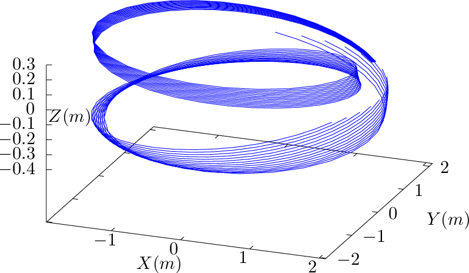